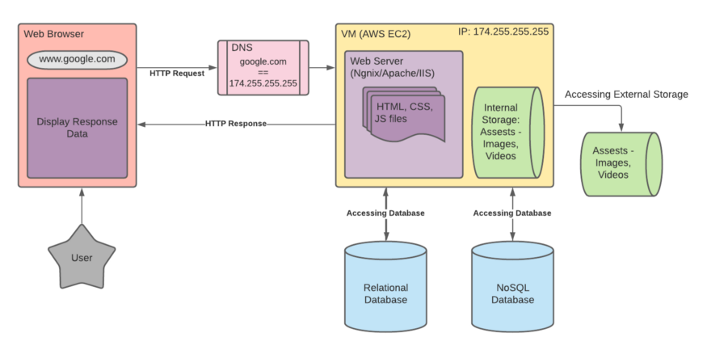

Home

The communication between a web browser and a web server based on a URL involves several steps and protocols working together to retrieve and display a web page. Here's a simplified overview of the key steps involved:
1. URL Parsing:
The process begins when a user enters a URL (Uniform Resource Locator) into the browser's address bar. The URL typically consists of several components, including the protocol (e.g., HTTP or HTTPS), domain name (e.g., www.example.com), port (if specified), path, and query parameters.
DNS Resolution:
The browser needs to resolve the domain name (e.g., www.example.com) to an IP address because network communication relies on IP addresses. It sends a DNS (Domain Name System) query to a DNS server to obtain the IP address associated with the domain.
2. Establishing a TCP Connection:
Once the browser knows the IP address of the web server, it initiates a TCP (Transmission Control Protocol) connection to the server. This involves a three-way handshake to establish a reliable connection between the client (browser) and server.
3. Sending an HTTP Request:
With the TCP connection established, the browser crafts an HTTP (Hypertext Transfer Protocol) request based on the URL and other headers. The request includes information about the desired resource (e.g., the path and query parameters) and the HTTP method (e.g., GET for fetching a web page).
4. Server Processing:
The web server receives the HTTP request and processes it. This may involve checking for the requested resource, executing any server-side scripts, and accessing databases if necessary.
Generating an HTTP Response:
After processing the request, the web server generates an HTTP response. This response typically includes the requested web page's content and headers, including metadata such as content type, status codes (e.g., 200 OK for success), and caching directives.
5. Sending the Response:
The web server sends the HTTP response back to the browser through the established TCP connection.
6. Browser Rendering:
Upon receiving the response, the browser processes the content and displays it to the user. This may involve rendering HTML, executing JavaScript code, loading additional resources (e.g., CSS stylesheets and images) by following embedded URLs, and rendering the final web page on the user's screen.
7. Closing the Connection:
Once the web page is fully loaded and displayed, the TCP connection may be closed. However, modern browsers often use techniques like HTTP keep-alive to reuse existing connections for subsequent requests to the same server, reducing latency.
Handling User Interactions:
The browser continues to interact with the server as the user interacts with the web page. This includes sending additional HTTP requests for resources, form submissions, and handling asynchronous requests via technologies like AJAX.
This sequence of steps repeats for each web page request and interaction between the browser and server, enabling the retrieval and display of web content based on the URL entered by the user.